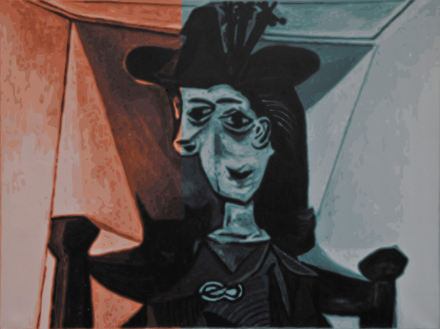
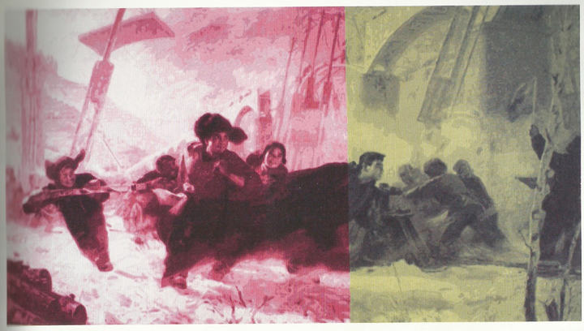

颜磊－深呼吸
安德鲁·马安可
标志性的变色镜、松散的黑发和一件皮夹克，43岁的颜磊就这样出现在12月的巴塞尔迈阿密艺术博览会上，蓄势待发，准备迎接这场由耀目的灯光、各界名流和销售额组成的盛世狂欢。他大步走过迈阿密海滩展览中心的大厅，迎面碰上比利时的Wim Delvoye——一个绝对的艺术滋事分子，不时居住在北京，拥有一家农场，因养殖刺有纹身的猪而闻名——两个艺术家来了个热烈的拥抱，人流从他们身边川息而过。
常青画廊邀请颜磊为展会的“艺术私房”版块创作的油画被美国海关拦下，这件事看起来也没让颜磊觉得怎么样。倒是画廊的一个助手赶上了最后一班航班，手提着替代品上了飞机，从巴黎常青画廊的新空间Le Moulin赶了过来（地处巴黎郊外，正举行新画廊的开幕群展，颜磊是参展艺术家之一）。几乎没有人知道事情出了些差错。在滑稽的红白条式样的门幕内，作品急就章地布置展出，无意中暗示了驱使各大艺术活动不断上演的“展览必须继续下去”的精神。
几天后他来到冬日肃杀的纽约，看了看Robert Miller画廊月底即将开幕的《“追光”系列——颜磊个展》的情况——此时的他更加缄默和克制。如果说巴塞尔的喧闹并没有耗尽他的能量，那么一整年累积下来的纷扰——包括参加盛大的第12届卡塞尔文献展和第10届伊斯坦布尔双年展——足以让他身心俱疲。整整十年。十年前颜磊与艺术家洪浩合作，伪造卡塞尔文献展邀请信寄发给自己的中国同行，以挑衅的姿态干预艺术圈，早早警告了正在滋生的自大狂妄想，由此“恶名”鹊起。一些接到信的艺术家真的以为自己受到了邀请，发现自己被恶作剧了一把后怒不可遏。
从此事情开始颠倒过来。中国艺术家曾经被欧美艺术机构视为欧洲当代艺术话语的衍生物而被遗弃，但近年来他们已经频频现身于国际艺术市场的最高阶层之中。他们其中的有些人已经以艺术明星的身份享有了一份荣誉与舒适。而对于颜磊来说，他赞赏杜尚、安迪•沃霍尔和杰夫•昆斯等人把艺术转变为含义晦暗的对抗形态，同时自己也对体制保有足够的警惕，经常性地挑战体制价值，破坏其机理。
颜磊1965年生于比邻北京的廊坊，在浙江美院接受过系统的版画复制训练；他这一代的中国艺术家涉猎的媒介形式范围很广，从摄影、影像到行为、装置都有所尝试。2000年，借着三年迁居香港的期限，颜磊开始把精力集中到油画创作上。他自己发明了一种编号创作方法，把图象分解为不同的组件，颠覆了绘画的观念，并把它推向“人造现实主义”。最为放肆的是，他置全部的绘画经典于不顾，指认绘画为“不需动脑地再现你可能在照片里看得到的图象。”
这种蓄意的“爱谁谁”的态度完美地体现在颜磊的作品“特醇”系列（2004－2005年）中。受到一种低焦油含量香烟的启发，他把其他艺术家的作品拷贝到大幅的画布上，展示其“浓度”被稀释的形态。于是毕加索“玫瑰时期”的名画《拿烟头的男孩》变成了《特醇——毕加索》（2005年），

并以模糊晦暗的蓝红板块替代了原作的形态。《特醇——疑是银河落九天》

也以相似的方式再现了孙国旗和张洪赞（1944－）1973－74年间创作的一幅作品，经典社会现实主义风格的农民人物画。颜磊说：“我复制的是别人的作品，所以我拷贝出来的肯定减弱了原作原有力量。我觉得这就像香烟的过滤嘴的作用一样 。”
他最近的作品是“追光”系列，反映的是所谓大和谐时代的洁净美学，这种美学方式可能在洗衣剂盒子上也找得到。作为这个系列的非正式主题，金属光芒的色带四散辐射，托衬起各种互不兼容的人物形象；颂歌的声音中，微笑的杰夫•昆斯、12届卡塞尔文献展夫妇策展人Roger Martin Buergel（1962－）和Ruth Noack（1964－）以及五、六十年代航空公司俗气的广告中出现的空中小姐一起粉墨登场。
如今，在艺术当权派的赞赏下，他把曾经专权的艺术机制从里到外翻转过来，暴露了其自身逻辑的谬误；价值就像伟大的艺术品一样，随时代而变，它们可以被分解，甚至被重新汇编。
当下艺术的价值是由市场决定的，颜磊用耳目一新的实用主义方式与之发生联系：“艺术世界已经变样了。市场的力量越来越比任何艺术家个人的意志力都来得强大。你能做的就是认清这个形势。”他继续发挥，“策展人都有一个共同问题：他们总是把自己从商业的圈子里分化出来。策展人不喜欢的艺术家卖得作品越来越贵。等你的作品贵到一定程度了，你就不用管策展人了！”
这听起来有些自相矛盾，不过颜磊却乐在其中，认为自己可以“幸免于难”。2003年底，颜磊受邀为深圳的国际当代雕塑展——“第五系统”做作品，当时展览的赞助商是华侨城房地产集团（CHINAOCT）。颜磊的作品是在市中心繁华地带圈下一块土地，并规定两年内不许有人进入。2006年，在北京的太康顶层空间，颜磊再次与洪浩合作，把近七百万人民币（约一百万美元）的制作预算全部为自己买了人身保险，承险公司正是展览和画廊的主要赞助者太康人寿保险集团。
2007年伊斯坦布尔双年展，颜磊把北京的朋克乐队“脑浊”带到土耳其，并在当地的Dogzstar夜总会进行了现场表演。颜磊对演出现场进行了摄录，并在展览中把它作为影像和海报招贴装置作品进行了展示。颜磊不好意思地回忆道：“我觉得这事挺好玩的。整个方案完成以后，伊斯坦布尔的总监侯瀚如和所有其他策展人都特别激动，他们觉得做得太棒了。”
颜磊2月份在美国阿斯彭美术馆做得一个展览倒是更为传统些。展览用了9幅“追光”系列的油画，把它们以叙事的方式布置起来，以反映颜磊在全球各地留下的足迹和行程路线，人们有一次看到光芒耀眼的山峰和美丽的空姐，安迪•沃霍尔蜷缩在一件齐整的毛皮外套中。阿斯彭美术馆总监及首席策展人海蒂（Heidi Zuckerman Jacobson）认为，作为滑雪圣地的阿斯蓬不是颜磊意有所指的讽刺目标，理由是“要是他真的说的是我们，那我觉得那些色带比喻的是把人们吸引到这里来的磁性吧。”
无论颜磊是否欣赏阿斯彭退避三舍的态度，他坚持以观念和地理的方式紧盯着方案的实施。在去阿斯彭的途中，他去拜访了住在旧金山的侯瀚如，路上他给《亚太艺术》（ArtAsiaPacific）打电话，宣传了一下自己在阿斯彭的展览，还提到了受邀去罗马参加另一个展览的计划。颜磊成了巡游于艺术世界的指挥者，暗示着自己作品题目中洋溢的轻浮的乐观主义——“特醇”和“追光”——一个脱离开自身现实的艺术世界。
翻译：苏伟
注：Reprinted by permission of ArtAsiaPacific
安德鲁 马安可（Andrew Maerkle）是一名常驻东京的作家与编辑。他目前担任日本在线艺术杂志ART iT国际版的副主编。其文章也常见于诸多国际期刊，如《弗瑞兹》（frieze）、《艺术与澳洲》（Art & Australia）、《时尚先生》（日本）， 并为亚尔巴塔那（Yael Bartana）、艾萨克朱利安（Isaac Julien）与平沐泽（Hiraki Sawa）等艺术家编写传述。2006－2008年，他曾任纽约《亚太艺术》（ArtAsiaPacific）杂志的副主编，也是杂志特刊《历书》（Almanac）创办团队的一员。他的中译英著作包括作家、策展人胡昉的系列杂文集《电影2010》（Cinema 2010）；日译英作品包括建筑师伊东丰雄（Toyo Ito）与艺术家、媒体理论家克洋山口（Katsuhiro Yamaguchi）的著作。